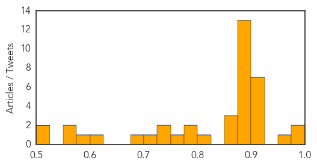
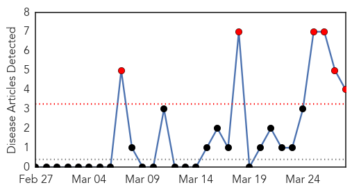

Unknown
30-Day Web Trend
0 alerts, 0 warnings

30-Day Twitter Trend
0 alerts, 0 warnings

Article Locations

Article Confidences
Top Articles:
- 0.999
- Heartland Virus Disease reported in Missouri and Tennessee
- 0.996
- Heartland Virus Hits 6 New Missouri, Tennessee Patients
- 0.966
- Virus Continues to Plague Midwest
- 0.917
- Chicago Tribune
- 0.917
- Chicago Tribune
- 0.917
- Chicago Tribune
- 0.917
- Chicago Tribune
- 0.917
- Chicago Tribune
- 0.910
- The world windows to Thailand
- 0.902
- Two people in United Kingdom contract tuberculosis
- 0.898
- Two contract TB from cats
- 0.885
- Deadly mosquito virus research identifies visitors at greatest risk
- 0.883
- KRNV, Reno, NV
- 0.883
- KRNV, Reno, NV
- 0.883
- KRNV, Reno, NV
- 0.883
- KRNV, Reno, NV
- 0.883
- KRNV, Reno, NV
- 0.883
- KRNV, Reno, NV
- 0.883
- KRNV, Reno, NV
- 0.883
- KRNV, Reno, NV
- 0.883
- KRNV, Reno, NV
- 0.883
- KRNV, Reno, NV
- 0.883
- KRNV, Reno, NV
- 0.866
- One more victim found in Washington state mudslide debris field
- 0.866
- Arabs condemn Syrian gov't "massacres", demand political solution
- 0.850
- People develop tuberculosis after contact with cats, believed to have passed through badger or rat bites
- 0.802
- Collective will can curb TB epidemic
- 0.796
- Healthcare package for Thar in the offing
- 0.781
- I caught TB from my pet cat
- 0.762
- The most from the coast
- 0.739
- Beware! Kittens can transmit TB bacteria
- 0.730
- Powys vaccination plea to dog owners over killer virus
- 0.706
- Aiken Co. resident exposed to rabies
- 0.695
- FMD spreads fast in N. Korea, infects cows near border: report
- 0.617
- Is it Time to Launch a Cull? Asks Badger Trust
- 0.586
- Case of tuberculosis confirmed at Liberty High School
- 0.553
- Canadian pork industry leaders call for united effort against PE
- 0.553
- Lymphoedema services deficient
- 0.519
- PEDv having big impact on the swine industry
- 0.512
- Australian Medical Association warns NIB turning healthcare into a commodity with medical tourism business
Top Tweets:
- 0.621
- hoy es el primer d√≠a dentro de mis makelemonadedays y me ha ido espectacular estoy feliz feliz feliz un d√≠a productivo de trabajo üçãüí™üí∏üí∏üí∞
- 0.522
- FluFactFriday: Not everyone with flu will have a fever! Learn these common flu symptoms: http://t.co/iXrIFaTCHo FluTip flufacts
Mumps
30-Day Web Trend
6 alerts, 0 warnings

30-Day Twitter Trend
0 alerts, 0 warnings

Article Locations
Article Confidences
Top Articles:
Top Tweets:
-
No tweets found for Mar 28, 2014